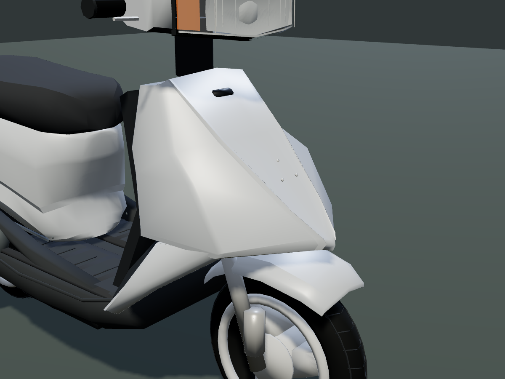

Punta y perímetro redondeados, nervaduras en V desde los hombros, aletas inferiores más estrechas, guardabarros de corona plana y toma de aire redondeada al ras.
Frente · antes y después
Antes · commit 5ce238a

Actual · punta redondeada y nervaduras continuas
Captura enviada como referencia
Versión anterior a la izquierda y referencia original a la derecha.